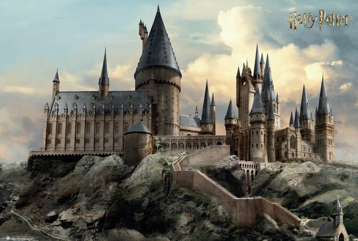

Хогвартс (официальное название Hogwarts School of Witchcraft and Wizardry или, реже, Hogwarts Academy of Witchcraft and Wizardry, в переводах — Школа/Академия Чародейства и Волшебства «Хогвартс») — вымышленная школа магии из серии романов английской писательницы Джоан К. Роулинг, находящаяся в Великобритании. Хогвартс является основным местом действия всех написанных до сих пор семи книг. Хогвартс является не единственной школой магии, но единственной в Англии. В Хогвартс принимаются дети, достигшие 11 лет и обладающие магическими способностями. Обучение длится 7 лет. В конце каждого года сдаются экзамены, но особенно важны для будущего учеников экзамены в конце 5-го (СОВ) и 7-го (ЖАБА)года. Количество учеников Хогвартса в книгах не указано, но скорее всего туда принимаются абсолютно все дети-волшебники из Великобритании. В русских переводах года обучения называются курсами (первый курс, второй курс и т. д.). Соответственно, учащиеся разных лет называются первокурсниками, второкурсниками и так далее. Преподаватели Хогвартса называются профессорами и обращаются к ученикам на «вы», например: мистер Поттер, мистер Малфой, мисс Лавгуд и т. д. читать дальше…
